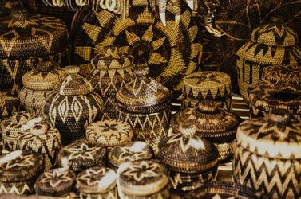
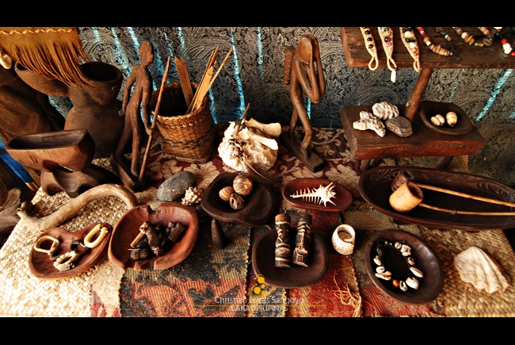

Handmade Heritage
The indigenous peoples of Palawan are accomplished craftspeople whose work reflects deep knowledge of local materials and centuries of refined technique. Rattan, bamboo, palm leaves, and forest vines are transformed into baskets, mats, bags, and ceremonial objects of extraordinary beauty and utility.
The Tagbanua are known for their intricate woven baskets (bayong) made from buri palm and their distinctive bead jewelry. Bead necklaces and bracelets, often featuring amber, trade beads of Chinese and Venetian origin, and seeds, are worn at ceremonies and serve as markers of identity and status.
Palawan's settler communities contribute their own craft traditions. The weavers of Brooke's Point produce fine pandan mats, while Puerto Princesa's Pasalubong Centers offer locally made products — from coiled rattan bags to hand-painted shells and carved wooden figures.
Music is inseparable from craft in Palawan. The babarak, a bamboo instrument similar to a jaw harp, is played during courtship. The pagang, a bamboo zither, produces hypnotic drone melodies that accompany healing ceremonies — crafted from the same forest materials that surround their makers.
Photo Highlights

